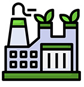
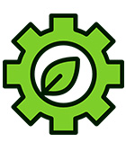
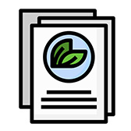

home > ESG > 녹색경영
녹색경영
삼성디스플레이는 친환경 생산 역량 증대,
폐기물 및 유해 물질 저감 등을 통해 녹색 경영을 실현합니다.
인류의 풍요로운 삶과 지구 환경 보전에 기여하고
지속 가능한 사회를 구현하기 위해 삼성디스플레이는 다음 목표를 실천합니다.
-

- 생산공정 친환경 실천
- 생산 과정의 오염물질, 화학물질 배출과 에너지 및 수자원 사용을 저감하고, 폐수, 폐기물 재이용 및 재활용을 활성화한다.
- 청정생산기술 도입을 확산하여 공정을 혁신하고 친환경 생산 역량을 강화한다.
- 당사의 탄소중립 목표 달성과 글로벌 기후변화 대응을 위해 지속적으로 노력한다.
-
- 상생 파트너십 강화
- 안전·보건·환경 경영체계 및 환경 안전 기술을 협력사와 공유하여 친환경적 사업 관계를 형성한다.
- 지역사회 환경 및 생태 보전을 지속적으로 관리하고, 이해관계자 소통을 기반으로 한 긍정적 가치를 창출한다.
- 안전·보건·환경 경영 방침 및 경영성과를 대내·외 이해관계자에게 공개한다.
-

- 제품 내 유해물질 관리
- 제품의 개발, 제조, 물류, 사용, 폐기에 이르는 전 과정의 환경 영향을 최소화한다.
- 폐기물 매립제로화 인증과 공급망의 엄격한 관리를 목적으로 관리 시스템을 운영 및 점검한다.
-

- 환경 경영체계 강화
- 안전보건, 환경, 에너지 관련 국내·외 법규 및 협약을 준수한다.
- 모든 종사자가 안전·보건·환경 경영체계를 이해하고 실천할 수 있도록 교육을 실시한다.